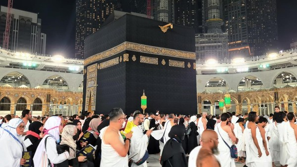
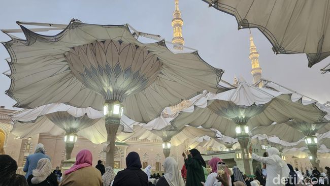
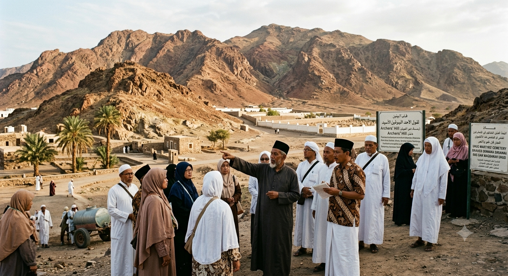
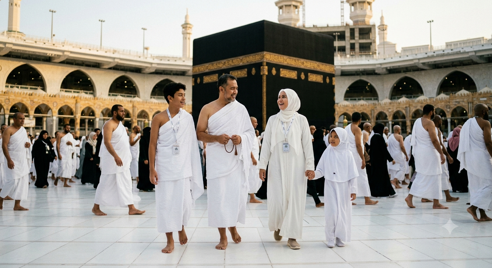

Masjidil HaramThawaf Mengelilingi Ka'bah
Jamaah AS-SIDDIQ melaksanakan ibadah Thawaf dengan khusyuk didampingi Mutawwif senior lulusan Universitas Islam Madinah.

Masjid NabawiPayung Raksasa Masjid Nabawi
Suasana senja indah jamaah berkumpul menunggu shalat Maghrib berjamaah di pelataran utama Masjid Nabawi Madinah.
 Keberangkatan
Keberangkatan
Pelepasan Jamaah Bandara
Foto bersama rombongan jamaah AS-SIDDIQ sebelum pengarahan & boarding pesawat Garuda Indonesia Direct Jeddah.
 Hotel Bintang 5
Hotel Bintang 5
View Haram dari Kamar Hotel
Fasilitas akomodasi Hotel Pullman Zamzam Clock Tower Makkah dengan panorama indah langsung menghadap pelataran Ka'bah.

Kegiatan JamaahZiarah Sejarah Jabal Uhud
Kajian sirah nabawiyah mengenai Perang Uhud bersama Pembimbing Ibadah di lokasi bukit pemanah Madinah Munawwarah.

Kegiatan JamaahPraktek Manasik Umroh
Bimbingan simulasi tata cara Thawaf dan Sa'i sesuai tuntunan Al-Qur'an dan Sunnah shahih sebelum keberangkatan.